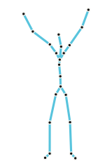
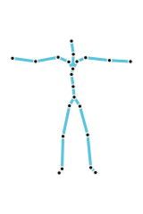
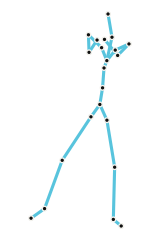

Question
Current mmWave pose models do not generalize across actions.
left-hand wave held out
Problem
Pose Representation
One pose vocabulary makes datasets comparable.



trains the pose vocabulary
θmm ∈ ℝ22×3
pose labels only
θ[22×3]
E
zq[16]
Coverage Mapping
Find the poses the radar dataset never saw.
k = 4
d(aᵢ, NN₁(aᵢ, ΦmmWave)) > rᵢ⁽ᵏ⁾
gap set ΦG
AMASS candidate
nearest mmWave
uncovered
wᵢ = min(rᵢ⁽⁴⁾,
Q₉₅({r⁽⁴⁾}))
Q₉₅ cap
densesparseoutlier
Simulation Evaluation
WiCompass keeps scaling.
Real-world Evaluation
WiCompass generalizes better.
Vision
Robust mmWave pose estimation starts
with the motions missing from radar data.
Use inexpensive MoCap priors to guide costly RF collection.